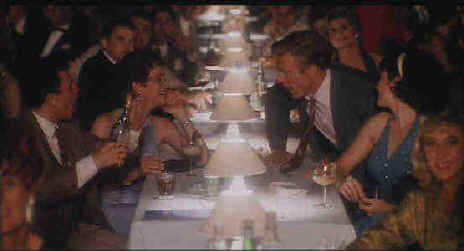

Universal/1990/145m/WS 1.85
Jack Weil is a professional gambler looking for a big score in a Havana casino. On the ferry from Key West to Cuba, Weil meets Bobby Duran, a classy lady who needs some help. Somewhere in between the casino tables of The Lido, run by Meyer Lansky manager Jack Volpe and the sordid streets of Havana, Jack must find direction. With the walls of Batista crumbling down around him, Jack falls for Bobby, plays cards, entertains ladies, and even finds time for an improbable jaunt into the country.
 |
Redford still has a way with the ladies. ©Universal |
Elements of Havana
try hard to capture a hint of romantic vapor from a film like Casablanca. The
classy, mysterious lady Weil falls for is married to a freedom fighter, just like Ilsa in Casablanca.
And of course Weil gives her up to her husband in the end, even though he loves her. But
Jack Weil lacks the appeal of Rick Blaine in Casablanca. Rick is a character who
lost his way somewhere on his path to the Casbah, while Weil is nothing but a flashy man
with the cards and the ladies. The Casinos fail to adequately conjure up images of
Rick’s Café Americaine.
The production design is quite remarkable. Havana,
recreated on a massive Santo Domingo set, feels like the real McCoy. Credit director
Pollack with creating an exciting and sleazy atmosphere. The camera lingers on interesting
faces, glimpses into streetside windows, and captures the feeling of the city inside out.
That’s almost part of the problem. You can sense that Pollack is desperate to dress
up the talky drama with snazzy ambiance. Too bad it doesn’t work.
The stars try to be as beautiful as the production. Robert
Redford does his best to give Weil a world-weary cool, but it’s an empty façade.
There’s even a gorgeous, classy, Swedish co-star in Lena Olin to play against
Redford, echoing Casablanca. The usual suspects in Havana include Alan Arkin in an
under-utilized turn as Jack Volpe and Raoul Julia as Arturo Duran. Thomas Milian gives as
secret police colonel Menocal an interesting edge.
Many of the scenes are shot with unusual lighting sources by
cinematographer Owen Roizman, making the journey to video a bumpy road. But, the blend of
colors is interesting, and while some of the images are soft and fuzzy, the visual beauty
of Havana comes through on this widescreen DVD. This is one DVD that could have
really used the extra resolution of an anamorphic transfer, but Havana isn’t
likely to see a new transfer until they bring big name casinos back to Cuba. The Dolby
Digital 2-channel sound does great with the Latin beat of the background music. Surround
information is quite adequate, if not overly active.